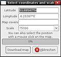
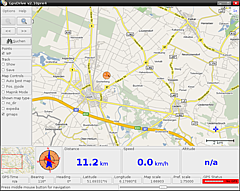
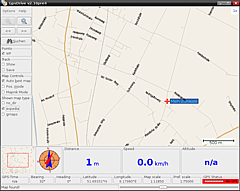

GpsDrive
Dieser Artikel wurde für die folgenden Ubuntu-Versionen getestet:
Ubuntu 14.04 Trusty Tahr
Zum Verständnis dieses Artikels sind folgende Seiten hilfreich:
GpsDrive  ist eine freie Navigationssoftware, welche das Expedia-Kartenmaterial sowie Landsat-Satellitenbilder der NASA verwendet. Durch die Verwendung einer Datenbank auf Basis von SQLite können Wegpunkte und Interessante Punkte während der Navigation gespeichert und anschließend unter anderem dem OSM-Projekt zur Verfügung gestellt werden.
ist eine freie Navigationssoftware, welche das Expedia-Kartenmaterial sowie Landsat-Satellitenbilder der NASA verwendet. Durch die Verwendung einer Datenbank auf Basis von SQLite können Wegpunkte und Interessante Punkte während der Navigation gespeichert und anschließend unter anderem dem OSM-Projekt zur Verfügung gestellt werden.
GpsDrive kommuniziert nicht direkt mit dem angeschlossenen GPS-Empfänger, dies übernimmt GPSD. Somit steht eine Unterstützung für alle von GPSD unterstützten GPS-Empfängern zur Verfügung.
Installieren¶
GpsDrive ist bis einschließlich Ubuntu 14.04 in den offiziellen Paketquellen enthalten [1]:
gpsdrive (universe)
 mit apturl
mit apturl
Paketliste zum Kopieren:
sudo apt-get install gpsdrive
sudo aptitude install gpsdrive
Verwendung¶
Das Programm kann mit dem Befehl gpsdrive gestartet werden [2].
Karten einbinden¶
Download¶
 Ist die aktuelle Position mit Hilfe eines GPS-Empfängers ermittelt, so genügt es, die Expedia-Kartendaten über "Options -> Maps -> Download" herunterzuladen. Über denselben Menüeintrag kann man auch weiteres Kartenmaterial über die Eingabe der Geokoordinaten nachladen. Die erstellten Bildschirmfotos ("screenshots") enthalten Kartenmaterial mit einem Maßstab von 1:15000.
OpenStreetMap¶
Freies Kartenmaterial aus dem OSM-Projekt - Rendern mit Mapnik
Google Maps¶

Mit Hilfe von GoogleMaps2GpsDrive können Karten aus Google Maps  für GpsDrive erzeugt werden. Unterhalb der Eingabefelder für die Kartengrenze befindet sich eine kleine Karte, über die die Grenzen bestimmt werden können. Das Kartenmaterial für GpsDrive sollte einen Überlappung von etwa 15% haben, um eine flüssige Navigation zu ermöglichen. Je nach gewünschter Auflösung sollte ein Zoomfaktor zwischen 11 und 17 (entspricht in etwa 1:2000) gewählt werden.
für GpsDrive erzeugt werden. Unterhalb der Eingabefelder für die Kartengrenze befindet sich eine kleine Karte, über die die Grenzen bestimmt werden können. Das Kartenmaterial für GpsDrive sollte einen Überlappung von etwa 15% haben, um eine flüssige Navigation zu ermöglichen. Je nach gewünschter Auflösung sollte ein Zoomfaktor zwischen 11 und 17 (entspricht in etwa 1:2000) gewählt werden.
Die nun erzeugten Kartenkacheln müssen in das Verzeichnis /home/<benutzer>/.gpsdrive/maps gespeichert und die Datei map_koord.txt [4] um die erzeugten Bezugszeilen ergänzt werden. Dabei können die Karten auch in einen separaten Unterordner verschoben werden, dabei muss aber die Bezugszeile in der map_koord.txt um den Pfad zum Ordner ergänzt werden.
Der einfachste Weg ist, das Kartenmaterial zu Kacheln und die Ausgabe in fertige wget Befehlszeilen umzulenken, diese können dann einfach in die Shell kopiert werden, und der Ladevorgang beginnt.
Hinweis:
Zitat aus den Nutzungsbedingungen:
Darüber hinaus darf der Service nicht für folgende Zwecke verwendet werden: (a) für oder mit Echtzeit-Verkehrsleitsystemen (einschließlich, aber nicht beschränkt auf, Navigationssysteme mit schrittweisen Anleitungen oder andere Leitsysteme, die über einen Sensor betrieben werden) oder (b) in Verbindung mit Systemen oder Funktionen zur automatischen oder eigenständigen Steuerung eines Fahrzeugs.
Eigene Karten¶
Selbst gescannte oder gezeichnete Karten können ebenfalls verwendet werden. Die Karten sollten im GIF-, JPG- oder PNG-Format vorliegen und müssen eine Größe von 1280x1024 Pixel haben. Der für die Koordinatendatei nötige georeferenzierte Bezugspunkt, WGS84, muss der Mittelpunkt der Kartendatei sein, der Dateiname der Kartendatei(n) muss mit map_ für eine Straßenkarte oder top_ für eine topografische Karte beginnen.
Wegpunkte¶
 Zur Verwaltung der Wegpunkte und Erfassung von "Points of Interest" stehen diverse Kategorien zur Verfügung:
| Wegpunktklassen | |
| Wegpunktklasse | Beispiele |
| Unterkunft | Hotels, Pensionen, Camping |
| Bildung | Schulen, Kindergärten |
| Speiselokal | gängige FastFood-Ketten, Imbiss, Restaurant |
| Gesundheit | Krankenhaus, Arztpraxis, Apotheke |
| Geld | Banken, Sparkassen, Geldautomaten |
| Personen | die eigene Heimat, Freunde, Verwandte |
| Ort | Stadt, Gemeinde |
| Öffentlich | Verwaltungen, Feuerwehr, Toilette |
| Freizeit | Freizeiteinrichtungen, Parks, Zoo, Nachtclub |
| Religion | Kirche, Friedhof |
| Einkaufen | diverse Konsumgüter, Lebensmittel, diverse Heimwerker-Ketten |
| Sehenswürdigkeiten | Museen, Ruinen |
| Sport | Sportplatz, Stadion |
| ÖPNV | Bus, Bahn, Flugzeug |
| Auto | Tankstelle, Werkstatt |
| WLAN | diverse Verschlüsselungen |
Die Wegpunkte werden entgegen der alten Version nicht mehr in einer MySQL-Datenbank, sondern in der eigenen SQLite-Datenbank abgespeichert.
Routen und Spuren¶
Zitat von der GpsDrive Homepage :
Es existiert im Moment keine Routenplanung-Funktion in GpsDrive.
Die Routenplanung kann jedoch in Form von vorhandenen oder erstellten Wegpunkten erfolgen. Dabei erzeugt man die Wegstrecke mit Wegpunkten und fährt diese ab, es wird die Distanz, die Richtung und geschätzte Zeit zum Ziel angezeigt.
Spuren (Tracks) die von einem Garmin GPS Tracker aufgezeichnet wurden, können in GpsDrive importiert werden: "Optionen -> Öffnen -> Track File"
Sprachausgabe¶
Wenn man vor dem Starten von GpsDrive noch den festival-server startet, hat man eine Sprachausgabe, die einem die Entfernung zum Ziel und Ähnliches ausgibt. Zum Starten des festival-servers einfach ein Terminal [3] öffnen und eingeben:
festival --server
Die Sprachausgabe kann in Deutsch, Englisch und Spanisch erfolgen.
Tasten- und Mausfunktionen¶
| Tastenkombinationen / Mausfunktionen | |
| Taste | Funktion |
| X | Wegpunkt an aktueller Position erzeugen |
| Y | Wegpunkt an Mausposition erzeugen |
| + | Maßstab vergrößern |
| - | Maßstab verkleinern |
| J | zum nächsten Wegpunkt |
| R | zum letzten Wegpunkt |
 | Position setzen |
|
Strg + | Wegpunkt an Mausposition erzeugen |
GpsDrive und Kismet¶
Hinweis:
Die Rechtslage in Deutschland zu Wardriving ist derzeit ungeklärt - es wird auf eine weitere Beschreibung zum Umgang mit GpsDrive und Kismet verzichtet.
Links¶
GoogleMaps2GpsDrive
- Online-Erstellung von Kartenkacheln und KoordinatendateiGoogleMaps2GpsDrive
 - Alternative falls vorstehender Link nicht erreichbar
- Alternative falls vorstehender Link nicht erreichbar
- Erstellt mit Inyoka
-
 2004 – 2017 ubuntuusers.de • Einige Rechte vorbehalten
2004 – 2017 ubuntuusers.de • Einige Rechte vorbehalten
Lizenz • Kontakt • Datenschutz • Impressum • Serverstatus -
Serverhousing gespendet von